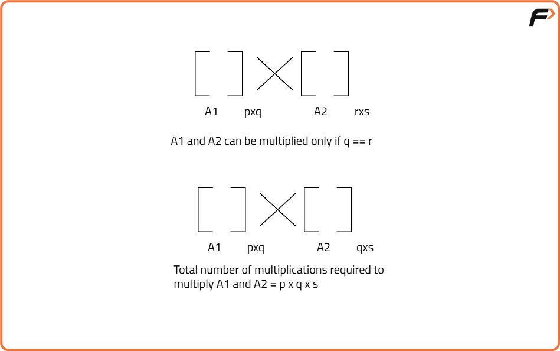
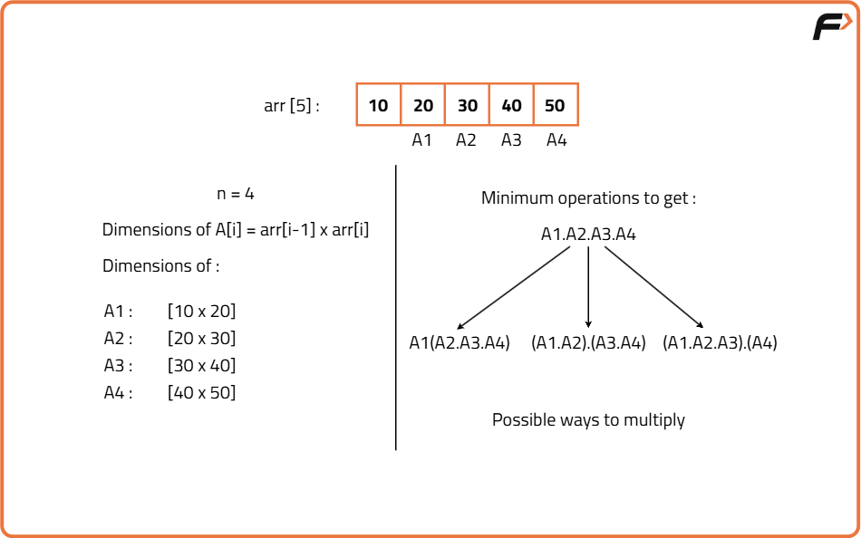
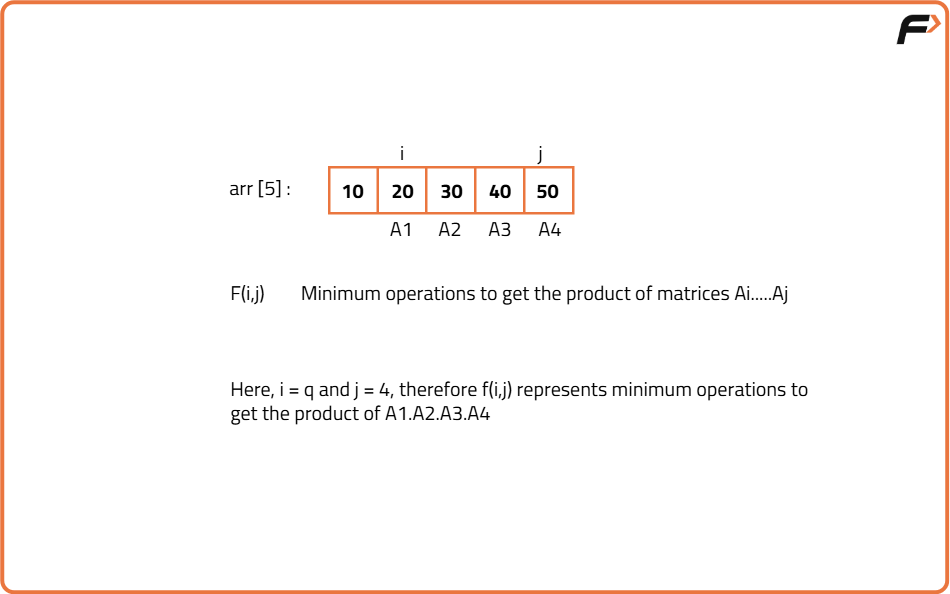
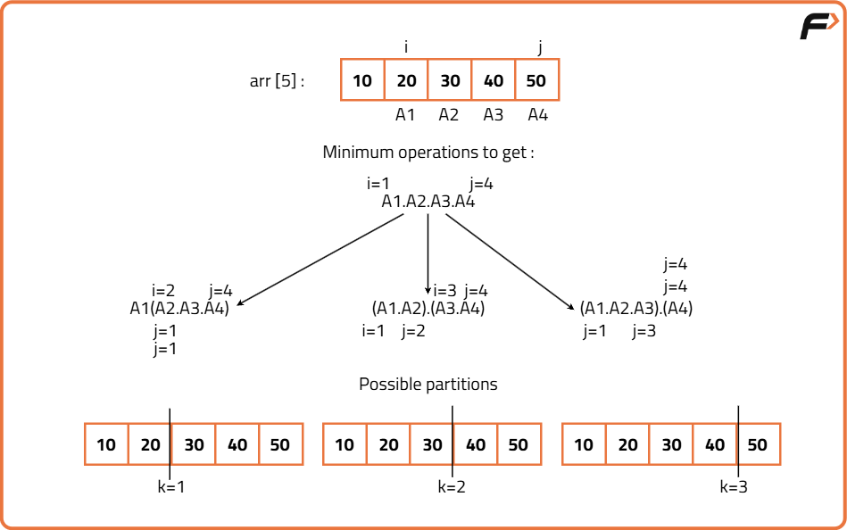
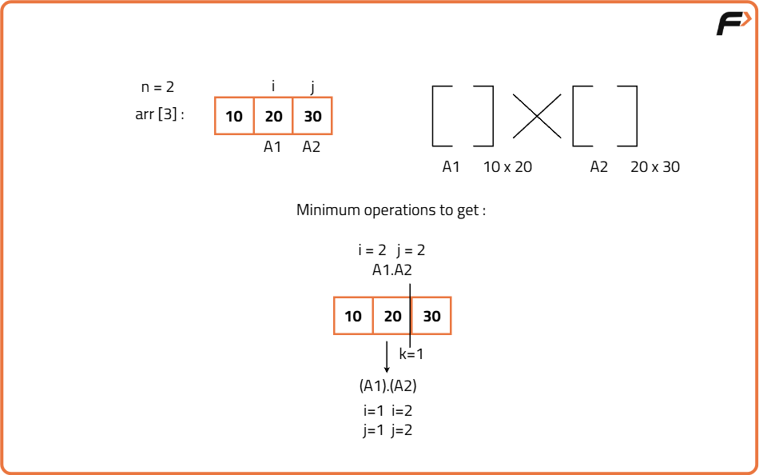
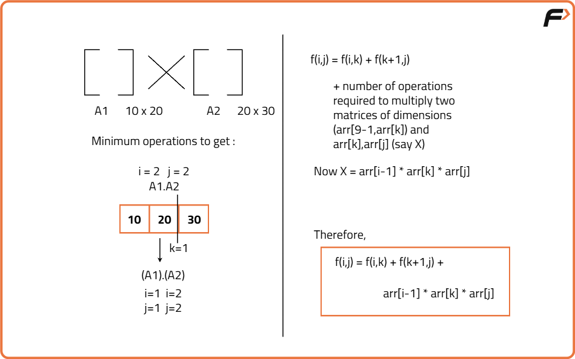

Matrix Chain Multiplication | (DP-48)
Problem Statement: Given a chain of matrices A1,..., An denoted by an array of size n+1, find out the minimum number of operations to multiply these n matrices .
Examples
Input : [40, 20, 30, 10, 30] Output : 26000 Explanation : Best parenthesization is ( (A1 x (A2 x A3)) x A4 ).
Input : [10, 20, 30, 40, 30] Output : 30000 Explanation : Optimal parenthesization minimizes cost.
Disclaimer: Don’t jump directly to the solution, try it out yourself first.
Recursive Approach
Algorithm
Whenever we need to find the answer to a large problem such that the problem can be broken into subproblems and the final answer varies due to the order in which the subproblems are solved, we can think in terms of partition DP.
Let us first understand the problem of matrix chain multiplication. In order to understand the problem we need to first understand the rules of matrix multiplication:
- Two matrices A1 and A2 of dimensions [p x q] and [r x s] can only be multiplied if and only if q=r.
- The total number of multiplications required to multiply A1 and A2 are: p*q*s
Rules to solve the problem of partition DP:
- Start with the full array: Represent the matrices with indexes i and j. We need to find the minimum cost to multiply matrices from i to j (f(i,j)).
- Check the base case: If i == j, there is only one matrix, so return 0 (no multiplication needed).
- Try all possible partitions: For k from i to j-1, split the array into two parts: f(i,k) and f(k+1,j).
- Calculate cost for each partition: Add the cost of multiplying the two subproblems plus the cost of multiplying their resulting matrices.
- Choose the minimum: Keep track of the minimum cost among all partitions.
- Return the result: After checking all partitions, return the minimum cost for multiplying matrices from i to j.






Code
#include <bits/stdc++.h>
using namespace std;
class Solution {
public:
// Function to find the minimum multiplication cost
int matrixChainOrder(vector<int>& arr, int i, int j) {
// Base case: if only one matrix is present, no multiplication needed
if (i == j) return 0;
// Initialize minimum cost as very large
int minCost = INT_MAX;
// Try all possible partitions
for (int k = i; k < j; k++) {
// Cost of multiplying matrices from i to k
int cost1 = matrixChainOrder(arr, i, k);
// Cost of multiplying matrices from k+1 to j
int cost2 = matrixChainOrder(arr, k + 1, j);
// Cost of multiplying the two resulting matrices
int costMultiply = arr[i - 1] * arr[k] * arr[j];
// Total cost for this partition
int total = cost1 + cost2 + costMultiply;
// Update minimum
minCost = min(minCost, total);
}
return minCost;
}
};
// Driver code
int main() {
Solution sol;
vector<int> arr = {40, 20, 30, 10, 30};
int n = arr.size();
cout << "Minimum number of multiplications is: "
<< sol.matrixChainOrder(arr, 1, n - 1) << endl;
return 0;
}
Complexity Analysis
Time Complexity: O(2^n). This is because we try every possible parenthesization, which leads to exponential recursion.
Space Complexity: O(n). This comes from the recursion call stack depth in the worst case.
Memoization Approach
Algorithm
As there are overlapping subproblems in the recursive tree, we can memoize the recursive code to reduce the time complexity.
- Create a dp array of size [n][n]. I and j can range from 0 to n-1 so we take the size n X n.
- We initialize the dp array to -1.
- Whenever we want to find the answer to particular parameters (say f(i,j)), we first check whether the answer is already calculated using the dp array(i.e dp[i][j]!= -1 ). If yes, simply return the value from the dp array.
- If not, then we are finding the answer for the given value for the first time, we will use the recursive relation as usual but before returning from the function, we will set dp[i][j] to the solution we get.
Code
#include <bits/stdc++.h>
using namespace std;
class Solution {
public:
// Recursive function with memoization
int solve(vector<int>& arr, int i, int j, vector<vector<int>>& dp) {
// Base case: only one matrix, no multiplication
if (i == j) return 0;
// If already computed, return from dp
if (dp[i][j] != -1) return dp[i][j];
// Initialize min cost as very large
int minCost = INT_MAX;
// Try every partition
for (int k = i; k < j; k++) {
int cost1 = solve(arr, i, k, dp);
int cost2 = solve(arr, k + 1, j, dp);
int costMultiply = arr[i - 1] * arr[k] * arr[j];
int total = cost1 + cost2 + costMultiply;
minCost = min(minCost, total);
}
// Store and return result
return dp[i][j] = minCost;
}
// Function to start the memoization approach
int matrixChainOrder(vector<int>& arr) {
int n = arr.size();
vector<vector<int>> dp(n, vector<int>(n, -1));
return solve(arr, 1, n - 1, dp);
}
};
// Driver code
int main() {
Solution sol;
vector<int> arr = {40, 20, 30, 10, 30};
cout << "Minimum number of multiplications is: "
<< sol.matrixChainOrder(arr) << endl;
return 0;
}
Complexity Analysis
Time Complexity: O(n^3). There are O(n^2) subproblems (for each i, j), and for each we try O(n) partitions.
Space Complexity: O(n^2). We use a 2D dp table of size n x n, plus recursion stack O(n).